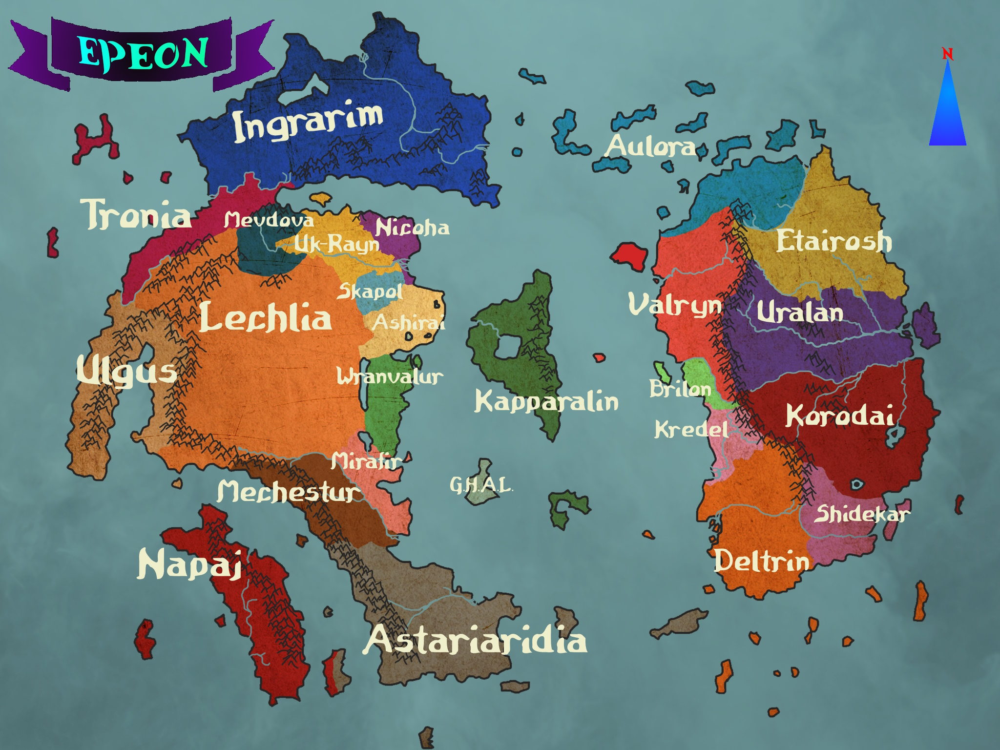

O mundo de Epeon🧙♂️
Ashirai

>Capital: Cap_Tehl
Descrição e tals
>História: História e tals.
>Pontos de Interesse:🗿
Astariaridia

>Capital: Cap_Tehl
Descrição e tals
>História: História e tals.
>Pontos de Interesse:🗿
Aulora

>Capital: Finfed
Aulora é um frígido reino do norte, composto em sua maioria por diversas ilhas, porém
com uma boa parte no continente. O clima impetuoso fez com que a população da região criasse uma cultura de
auto-suficiência e honra à antepassados.
>História: O conceito de uma Aulora unificada é relativamente recente.
A região antes era controlada pelos seus 3 reinos vizinho: Valryn, de onde veio a atual população élfica; Ingrarim, de
onde vieram vários anões; e Etairosh, que por si também era parte do Reino de Uralan.
A unificação veio após uma guerra,
liderada pelo humano Place, The Holder, pai do atual Rei, Rigotin. Após algumas semanas de guerra intensa, Uralan e Ingrarim
reconheceram a soberania de Uralan, mas Valryn estendeu seus esforços por diversos anos, até eventualmente esgotar-se
de recursos.
>Pontos de Interesse: Ilhas, Mun Duril
Brilon

>Capital: Cap_Tehl
Descrição e tals
>História: História e tals.
>Pontos de Interesse:🗿
Coneia

>Capital: Cap_Tehl
Lugar
>História: História e tals.
>Pontos de Interesse:🗿
Denin

>Capital: Cap_Tehl
Lugar
>História: História e tals.
>Pontos de Interesse:🗿
Deltrin

>Capital: Cap_Tehl
Hobgoblins & Piratas
>História: História e tals.
>Pontos de Interesse:🗿
Eutariosh

>Capital: Escuteon
Um reino recente, consciste principalmete de planícies e
pradarias, com uma cultura forte de hipismo.
>História: As regiões do atual
reino de Eutariosh antes eram uma província de Uralan, até uma crise interna ocorrida pelo
fato de que o rei de Uralan, Pepe II estava idoso e perto de sua morte. Incerteza e insatifação
geraram um sentimento de separação e, liderados por Laduin, uma guerra foi travada que resultou
na separação do império. Pouco tempo após isso, a influência de Laduin nas partes mais distantes
do reino, gerando vários conflitos internos. Estes confltos resultaram na separação das regiões de
Conia, Denin e Itapas.
>Pontos de Interesse: Biblioteca do Corvo, Vale de Marelin, Monolito
G.H.A.L.

>Capital: Cap_Tehl
Grupo de Halflings Autônomos Livres, ancapistão menor
>História: História e tals.
>Pontos de Interesse:🗿
Ingrarim

>Capital: Gongur
Possível local de origem dos anões, montanhas e gelo
>História: História e tals.
>Pontos de Interesse:🗿
Itapas

>Capital: Cap_Tehl
a região de Itapas constitui cidades e vilas semi autônomas mas com um lorde entre elas, com um clima frio e seco,
é uma região selvagem e sucetível à ataques de vários tipos de crituras, fazendo a vida aqui ser bem difícil
>História: Recentemente
independente de Eutariosh, a socidedade de Itapas era habitada por comunidades no geral autônomas mas que compartilhavam uma cultira entre si,
até serem anexadas e integradas à Uralan, que tinha interesse em minas de prata na região. Os habitantes apoiaram a guerra de Eutariosh então
foram integrados ao império. Recentemente os habitantes se sentiam mal representados e explorados por Eutariosh então lutaram e após um
período de conflitos, liderados pelo mago Alguin Korod, conseguiram independência.
>Pontos de Interesse:Fortaleza Stok, Monumento de
Korod, Lago do Espelho, Torre da Visa
Kapparalin

>Capital: Alahim
Ilha com selvas maravilhosas e perigosas e ponto de origem dos elfos
>História: História e tals.
>Pontos de Interesse:Lago Trion, Árvore de Origem, Porto Alit
Korodai

>Capital: Palsam
A região de Korodai é seca e inóspida, sendo formada principalmente por desertos, montanhas
e pradarias. O clima local concentrou uma grande população de orcs, goblinóides e outras criaturas que dificultavam a
habitação de outras raças.
>História: Por muito tempo, apenas tribos e grupos nômades separados habitavam a região. Até
que um homem pelo nome de Vaper (sua verdadeira origem ainda desconhecida), de alguma maneira conseguiu unir um número considerável
de tribos sobre uma única bandeira. Com seu novo exército, Vaper lançou uma ofensiva contra o reino de Uralan. Mesmo com suas
habilidades arcanas e táticas, não obteve sucesso. Após sua queda, um orc que lutou em seu exército pelo nome de Gruumsh, muito
discontente com as ideias e decisões de Vaper tomou seu lugar e instaurou uma espécie de semi-reino governado por ele mesmo e
líderes locais. Sábios ainda discutem como foi sua assenção, com teorias até dizendo que o lendário ladino Salmonella o inspirou.
>Pontos de Interesse: Monolito dos Espíritos, Deserto de Dai, Eterna Fogueira de Grá, Templo dos Cavaleiros Deji
Kredel

>Capital: Cap_Tehl
Descrição e tals
>História: História e tals.
>Pontos de Interesse:🗿
Lechlia

>Capital: Sharne
Conhecida como "A Terra do Horizonte Perdido", Lechlia é um reino gigantesco que se estende por uma
vasta região, contendo vários segredos e mistérios escondidos em suas dunas de areia laranja.
Com uma vasta cordilheira de montanhas ao leste e sul e um deserto extremamente árido, a vida nessa região
é difícil e extrema. Povos da região se adaptaram em sobreviver pelo comércio com outros povos e extração de outros bens, já
que a região não é tão fértil. Com o tempo foi criada uma cultura de mobilidade e nomidissismo, com Lechlia tendo poucas
cidades, das quais a maioria se encontram nas montanhas
>História: História e tals.
>Pontos de Interesse:🗿
Mechestur

>Capital: Fester
Mechestur é uma nação onde a maioria da população vive em cidades,
com sua fundação em uma magia quase única. Vários gnomos
nativos do local se expecializaram em embutir objetos com magia, criando vários avanços únicos, mas também criando
uma cultura extremamente reclusa
>História: Sem dúvida o evento mais marcante da história de Mechestur foram as
Guerras Psíquicas, uma guerra civil entre grandes cidades, principalmente entre Fester e Troyor. Os exatos motivos para
a guerra são em parte desconhecidos, mas os resultados da guerra são sentidos até hoje. A guerra definitivamente acabou
quando uma bomba arcana, desenvolvida por vários magos e artífices foi explodida em uma cidade ao norte. O poder desta
arma foi tão forte que é teorisado que a própria realidade foi um pouco quebrada. Por causa disso uma grande região
do norte da nação virou um local inabitável, com constantes monstros e quebras da realidade permeando a região.
>Pontos de Interesse: Torre de Heirote, Planícies de Prata, Orbe Central de Fester
Mevdova

>Capital: Cap_Tehl
Descrição e tals
>História: História e tals.
>Pontos de Interesse:🗿
Mirafir

>Capital: Lesrem
Um reino pequeno mas poderoso e com diversos recursos, se destaca por ter um governo muito centralizado
Originalmente apenas a cidade de Lesrem, criou uma rápida expansão e anexação de territórios vizinhos,
até formar as bordas atuais, integrando as culturas e tradições dos povos conquistados. A cidade de Lesrem foi
construída no centro de um grande lago, de mesmo nome, por magos arquitetos logo após A Queda, porém seus
nomes foram perdidos pelo tempo.
>Pontos de Interesse: Capital de Lesrem, Gigante Caído
Napaj

>Capital: Cap_Tehl
Descrição e tals
>História: História e tals.
>Pontos de Interesse:🗿
Nicoha

>Capital: Cap_Tehl
Descrição e tals
>História: História e tals.
>Pontos de Interesse:🗿
Shidekar

>Capital: Cap_Tehl
Descrição e tals
>História: História e tals.
>Pontos de Interesse:🗿
Skapol

>Capital: Cap_Tehl
Descrição e tals
>História: História e tals.
>Pontos de Interesse:🗿
Tronia

>Capital: Cap_Tehl
Descrição e tals
>História: História e tals.
>Pontos de Interesse:🗿
Uk-raim

>Capital: Cap_Tehl
Descrição e tals
>História: História e tals.
>Pontos de Interesse:🗿
Ulgus

>Capital: Cap_Tehl
Um local quente e de difícil acesso, os habitantes desenvolveram cidades e habilidades para
sobreviver nas montanhas, que cobrem toda a região
>História: História e tals.
>Pontos de Interesse:🗿
Uralan

>Capital: Suanam
Localizada em uma região bem úmida e quente, Uralan se tornou um dos reinos mais poderosos
da região. A sociedade de Uralan é composta por diversos povos de outras regiões que se estabeleceram em suas terras.
Também abriga o maior rio conhecido, o rio Garapê, onde a capital está localizada. A geografia de Uralan é bem diversa,
com pradarias próximas da costa, uma gigantesca selva ao centro, uma rede de montanhas dividindo o reino no meio
e uma grande região pantanosa além das montanhas.
>História: O povo de Uralan é composto por vários grupos: os
que já habitavam a região em tempos antigos, exploradores e mercadores que vieram do mar, principalmente de Ulgus e Napaj
que fundaram as primeiras cidades como postos de comércio,
e também o povo do norte do próprio continente. A capital foi fundada pelo primeiro imperador de Uralan, Pepe I, que unificou
as outras cidades e habitações para impulsionar a troca e comércio. No reinado de seu filho, Pepe II foram criados diversos
centros de pesquisa arcana, e uma guerra foi travada com Korodai, onde Uralan saiu vitoriosa, e as regiões ao norte se
rebelaram e se dividiram de Uralan, criando assim o reino de Etairosh. O atual imperador é João Canário, um elfo patrulheiro e
exímio arqueiro, que defendeu o imperador e lutou bravamente na guerra do norte, indicado diretamente por Pepe II, que hoje
habita as estantes imensas da Biblioteca Real como um fantasma.
>Pontos de Interesse: Biblioteca Real de Suanam, Templos
da ilha de Mar-jol, Pântanos de Tuné, Praça dos Heróis em Ohmar
Valen

>Capital: Lenbar
Valem é uma região inóspida e obscura, com uma cultura
muitas vezes considerada macabra, formada por anos de opressão sobre Korodai. Suas riquezas vêm
principalmente da mineração de metais e pedras preciosas. Necromancia e outras
magias escuras são comuns.
>História: Recentemente separada do controle de Korodai,
a região foi fundada com base em uma rebelião de elfos e outros seres oprimidos e descontentes
com a vida em Korodai
>Pontos de Interesse: Minas Rubras de Karam, Obelisco das Três Luas,
Vale do Sol Escuro
Valryn

>Capital: Romorin
Uma vez um grande e expanssívo império que se estendia por toda a costa,
Valryn atual ainda é uma poderosa força militar mas diminuída e mais focada nas suas terras atuais.
>História: A região foi originalmente habitada por elfos que ainda são a maior parte da população.
Chegaram ao continente vindos da ilha de Kapparalin, expulsando gigantes que habitavam ali e contruindo as
primeiras contruções. Após uma era dourada de prosperidade, o império começou a se expandir para o sul e
norte, integrando e dominando os habitantes. Alguns aceitaram a proteção do império mas muitos estavam
insatisfeitos, entrando em guerra. Dessa a mais impactante para Valryn foi a Guerra do Norte, contra
Aulora. A guerra trouxe tantos prejuízos que o imperador foi destronado e seu filho, David, foi escolhido
como novo imperador, trazendo uma era de paz e recontrução para o império
>Pontos de Interesse:🗿
Wranvalur

>Capital: Dusan
Descrição e tals
>História: História e tals.
>Pontos de Interesse:🗿
{kind=link}